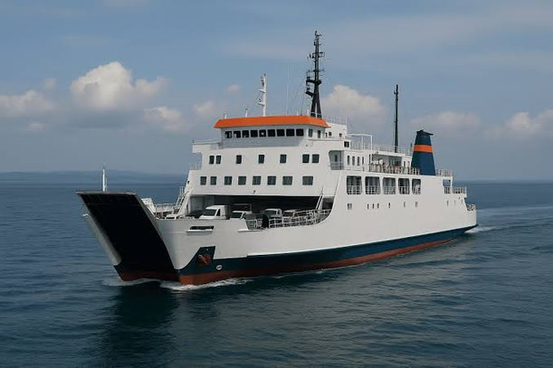
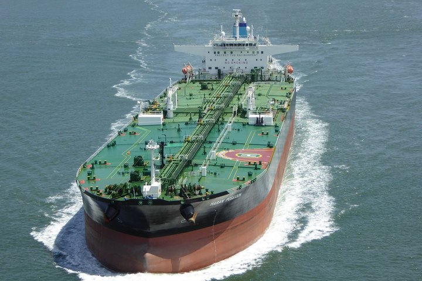
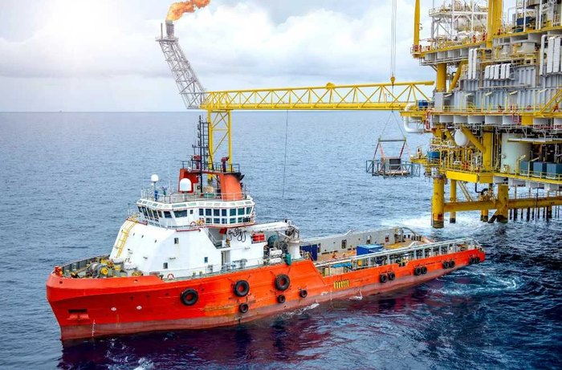
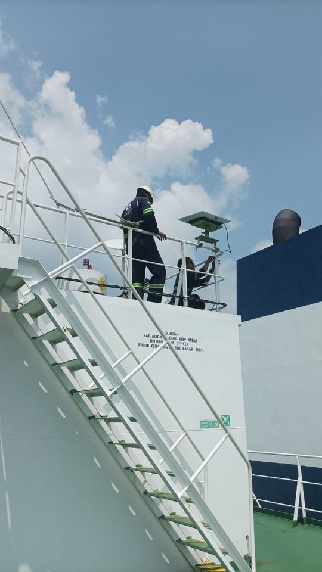
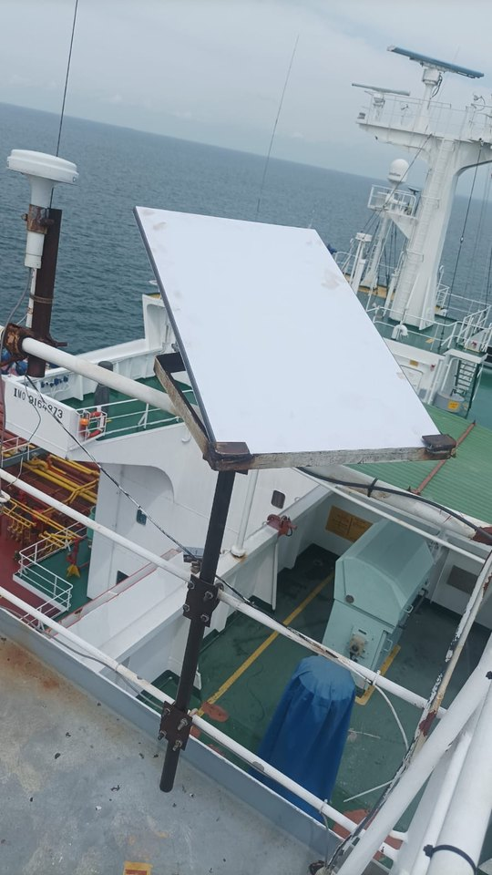

Koneksi Tidak Stabil
Sinyal lemah saat kapal beroperasi di laut lepas atau area terpencil tanpa infrastruktur jaringan memadai.
PT Bintang Khatulistiwa Internusa menghadirkan solusi konektivitas satelit terkelola untuk kapal, armada, dan lokasi terpencil — dari instalasi hingga monitoring 24/7.
Koneksi masih menjadi tantangan besar di laut dan remote area. Empat hal ini yang paling sering dihadapi perusahaan pelayaran.
Sinyal lemah saat kapal beroperasi di laut lepas atau area terpencil tanpa infrastruktur jaringan memadai.
Solusi satelit konvensional berbiaya tinggi dengan bandwidth dan latensi yang belum optimal.
Sulit memantau operasional, CCTV, IoT, dan sistem internal secara langsung dari kantor pusat.
Instalasi, troubleshooting, dan pemulihan gangguan sering memakan waktu lama tanpa dukungan yang responsif.
Satu mitra untuk seluruh kebutuhan konektivitas kapal Anda — dari kuota dan koneksi internet di laut, jaringan kapal, integrasi operasional, sampai layanan monitoring.
Pelajari BKIConnectKuota dan koneksi internet berkecepatan tinggi di laut.
Router, firewall, VoIP, Wi-Fi, VLAN, dan bandwidth policy.
Akses CCTV, akses lokal, laporan, akses kantor, dan jaringan kru.
Monitoring NOC, dukungan, pemeliharaan, dan pelaporan.
Empat tingkat BKIConnect, dari Lite hingga Prime. Mulai dari Standard, setiap paket dilengkapi jalur cadangan agar koneksi lebih aman. Harga fleksibel dan disesuaikan dengan kebutuhan Anda.
Level 1 · Essential
Koneksi terkelola yang hemat, lengkap dengan router, firewall, dan dashboard. Tanpa jalur cadangan.
Level 2 · Protected
Ditambah jalur cadangan: koneksi berpindah otomatis jika jalur utama terganggu.
Level 3 · Maritime-grade
Jalur utama khusus maritim yang lebih stabil di laut, dengan jalur cadangan.
Level 4 · Fully redundant
Cadangan di jaringan terpisah untuk operasional kritis, dikelola dalam satu dashboard.
Untuk perusahaan yang membutuhkan konektivitas stabil di laut, area terpencil, atau lokasi kerja dengan jaringan terbatas.

Kenyamanan penumpang, komunikasi crew, dan operasional yang efisien.

Komunikasi kru, monitoring operasional, CCTV, dan koordinasi dengan kantor pusat.

Koneksi andal untuk operasional berat dan komunikasi darurat di lepas pantai.
Dari koneksi internet di laut, instalasi, integrasi jaringan, monitoring, akses CCTV, aplikasi, hingga koneksi cadangan.
Disesuaikan dengan kebutuhan nyata kapal, kru, tim IT, dan manajemen di darat.
Dukungan lokal yang membantu meminimalkan downtime dan menjaga kapal tetap terhubung.
Pantau konektivitas, sistem kapal, CCTV, dan komunikasi dari darat melalui solusi terintegrasi.
Kami menyesuaikan solusi dengan infrastruktur dan kebutuhan operasional perusahaan Anda.
BKI mendampingi, mendukung, dan mengembangkan solusi seiring pertumbuhan armada Anda.
PT Soechi Lines Tbk dan PT Waruna Nusa Sentana telah mempercayai produk dan layanan BKI untuk armada mereka.
Lihat Klien Kami

Diskusikan kebutuhan konektivitas armada Anda dengan tim BKI. Kami siap membantu dari konsultasi hingga monitoring.